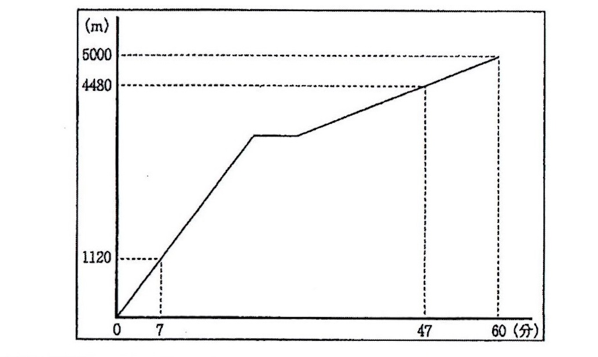
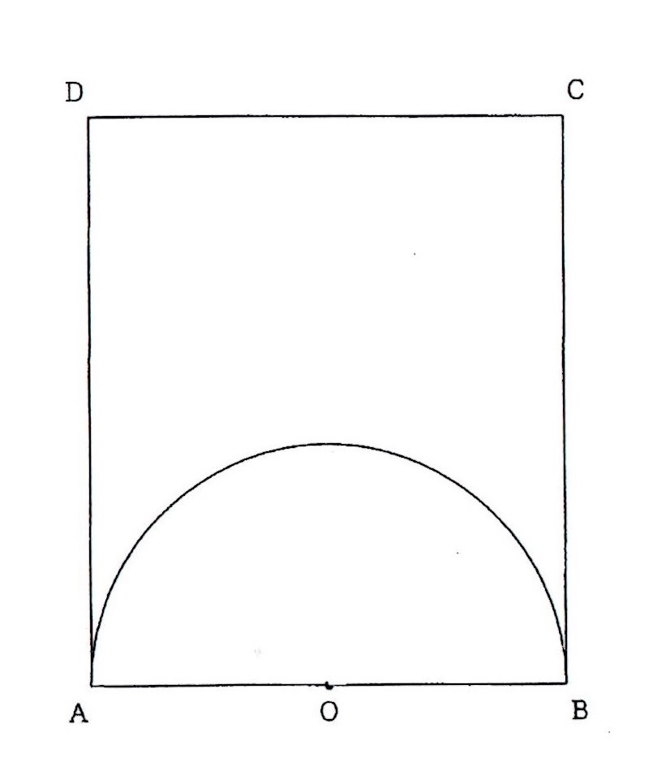
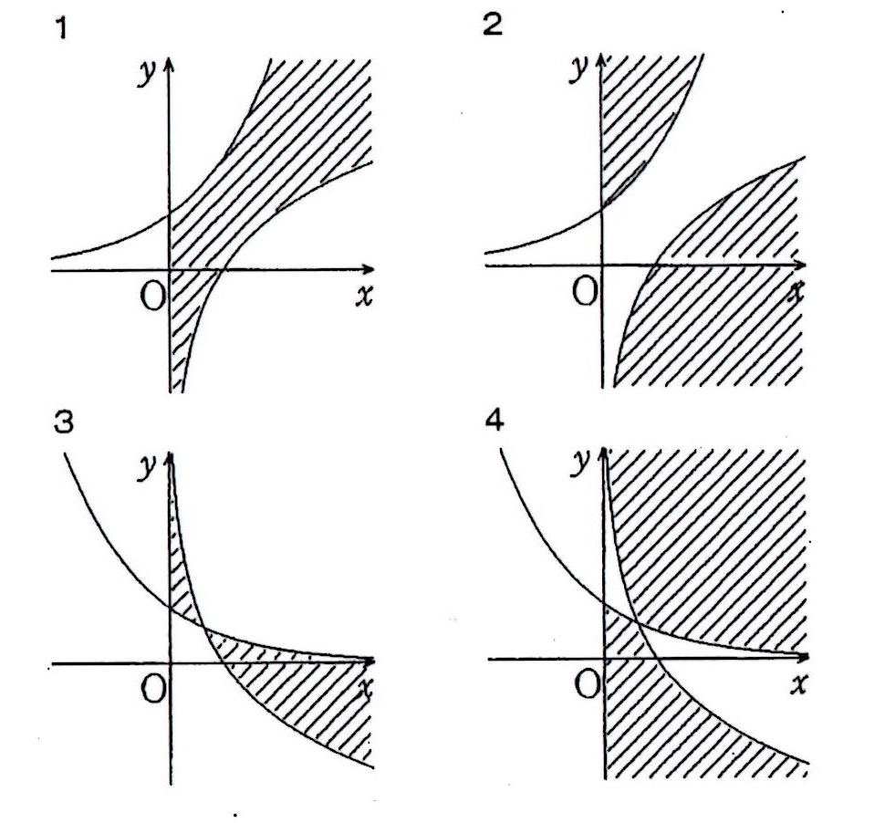
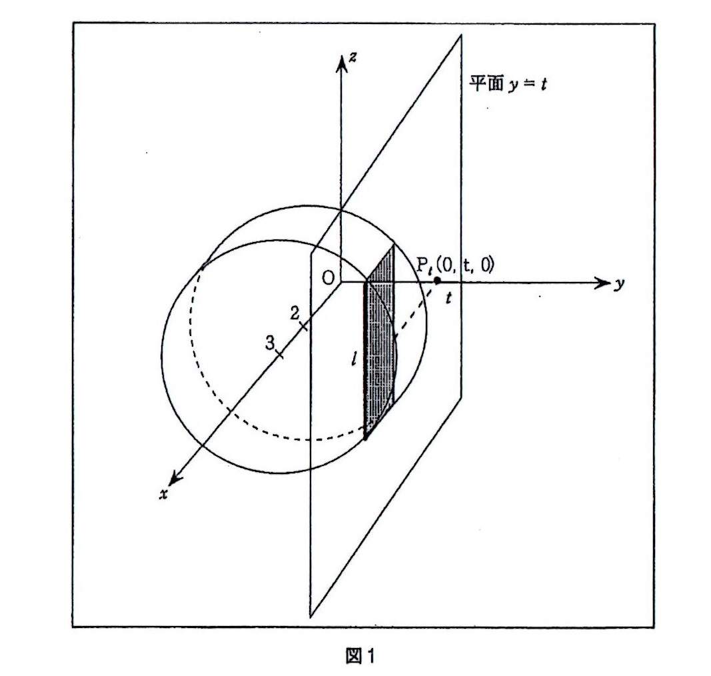
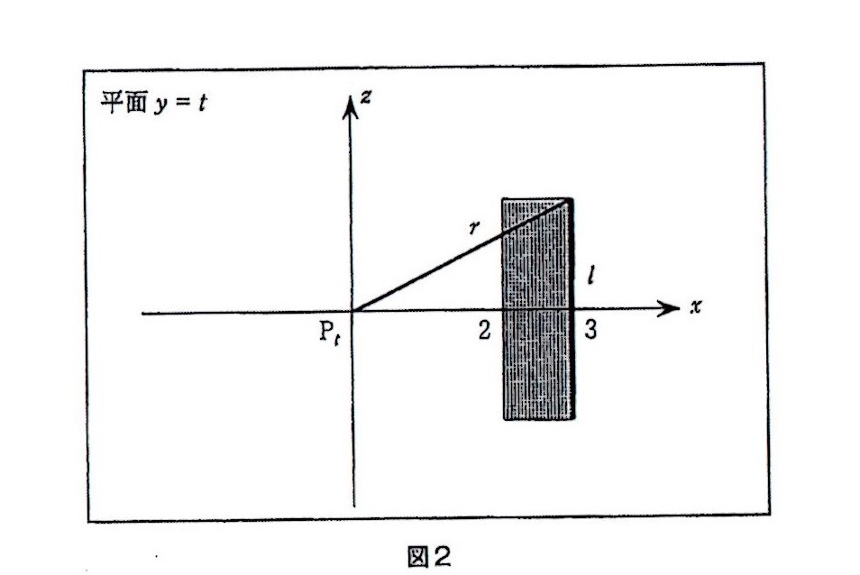

令和2年度宮城県教員採用試験解答
第1問 次の各問いに答えなさい。
問1 \(p＜q＜r\)とする。2次方程式 \(2(x-p)(x-q)-(x-r)^2=0\)の解\(\alpha,\beta(\alpha＜\beta)\)と\(p＜q＜r\)
の大小関係として正しいものを、次の1~4のうちから１つ選ぶ、マークシートの 1 の
番号のところにマークしなさい。
１ \(\alpha＜p＜q＜\beta＜r\) ２ \(\alpha＜p＜q＜r＜\beta\)
３ \(p＜\alpha＜q＜\beta＜r\) ４ \(p＜\alpha＜q＜r＜\beta\)
問2 \(0^\circ≦\theta≦180^\circ\)とする。\(\sin\theta+\cos\theta=\frac{1}{2}\)のとき、\(\cos\theta\)の値として正しいものを、
次の1~4のうちから１つ選び、マークシートの 2 の番号のところにマークしなさい。
１ \(\frac{1+\sqrt{7}}{4}\) ２ \(\frac{1-\sqrt{7}}{4}\) ３ \(-\frac{1+\sqrt{7}}{4}\) ４ \(-\frac{1-\sqrt{7}}{4}\)
問3 10個のデータである。そのうちを5個データの平均値は4、標準偏差は2であり、残りの5個
のデータの平均値は8、標準偏差は4である。このとき、全体の分散の値として正しいものを、
次の1~4のうちから1つ選び、マークシートの 3 の番号のところにマークしなさい。
１ \(11\) ２ \(12\) ３ \(13\) ４ \(14\)
問4 1から6までの目が出るサイコロ3個を同時に投げるとき、出る目の積が15の倍率である確率
として正しいものを、次の1~4のうちから1つ選び、マークシートの 4 の番号のところ
にマークしなさい。
１ \(\frac{1}{12}\) ２ \(\frac{1}{4}\) ３ \(\frac{1}{3}\) ４ \(\frac{1}{2}\)
問5 点A\((1,3)\)を通り、円\(x^2+y^2=5\)に第2象限で接する直線の方程式として正しいものを
次の1~4のうちから1つ選び、マークシートの 5 の番号のところにマークしなさい。
１ \(-x+2y=5\) ２ \(-4x+3y=5\)
３ \(-7x+4y=5\) ４ \(2x+y=5\)
問6 AB=5、BC=10、CA=8である△ABCの内心をIとし、直線AIと辺BCの交点をDとする。このとき、
\(\frac{AI}{ID}\)の値として正しいものを、次の1~4のうちから1つ選び、マークシートの 6 の番号のところに
マークしなさい。
１ \(\frac{1}{2}\) ２ \(\frac{5}{4}\) ３ \(\frac{13}{10}\) ４ \(\frac{5}{13}\)
問7 100！を計算した値の末尾に連続して並ぶ0の個数として正しいものを、次の1~4のうちから1つ選び、
マークシートの 7 の番号のところにマークしなさい。
１ \(11\) ２ \(20\) ３ \(21\) ４ \(24\)
問8 \(\sqrt{3}\sin\frac{\pi}{12}+\cos\frac{\pi}{12}\)の値として正しいものを、次の1~4のうちから1つ選び、
マークシートの 8 の番号のところにマークしなさい。
１ \(1\) ２ \(\frac{\sqrt{3}}{2}\) ３ \(\sqrt{2}\) ４ \(2\)
問9 \(\triangle\)OABにおいて、\(\overrightarrow{\rm OA}=\overrightarrow{a}、\overrightarrow{\rm OB}=\overrightarrow{b}\)とする。\(|\overrightarrow{a}|=4、|\overrightarrow{b}|=5、|\overrightarrow{a}+\overrightarrow{b}|=7\)のとき、
\(\triangle\)OABの面積\(S\)の値として正しいものを、次の1~4のうちから1つ選び、
マークシートの 9 の番号のところにマークしなさい。
１ \(4\sqrt{5}\) ２ \(4\sqrt{6}\) ３ \(4\sqrt{7}\) ４ \(4\sqrt{10}\)
問10 関数\(x^x(x>0)\)を\(x\)で微分したものとして正しいものを、次の1~4のうちから1つ選び、
マークシートの 10 の番号のところにマークしなさい。
１ \(x^x\) ２ \(x^x+x\) ３ \(\log x+1\) ４ \(x^x(\log x+1)\)
第2問 次の問1,問2の問いに答えなさい。
問1 花子さん、桜子さん、梅子さん、薫子さんは中学2年生です。先生がこの4人の学級の数学の
授業で、次の課題を提示しました。あとの各問いに答えなさい。
課題
太郎さんは自宅から5㎞離れた一郎さんの自宅に遊びに行くために、自宅を午前9時
に出発し一定の速さで走りました。途中コンビニエンスストアでおやつを購入し、その後
一定の速さで歩いたところ、午前10時に一郎さんの自宅に着きました。コンビニエンスス
トアで買い物をしていた時間は7分間でした。下のグラフは、太郎さんが一郎さんの自宅
に着くまでの時間と道のりを関係を表したものです。
太郎さんが、コンビニエンスストアを出発した時刻を求めなさい。

（１）次の会話は、先生が課題を提出した後、グラフをもとに話し合っている場面です。
先 生：このグラフをみて、わかることはありますか。
桜子さん：太郎さんは、自宅を出発してから47分後に、太郎さんの自宅から4480mの地点
にいることがわかります。
薫子さん：グラフの平らな部分は太郎さんがコンビニエンスストアで買い物をしていたと
ころです。
花子さん：太郎さんが走っているときのグラフは、2点\((0,0),(7,1120)\)を通って
いて、比例の式で表せます。
梅子さん：太郎さんがコンビニエンスストアから歩いているところのグラフは2点
\((47,4480),(60,5000)\)を通っており、これも比例の式で表せます。
花子さん、桜子さん、梅子さん、薫子さんのうち、発表の内容が誤っている人は誰ですか。次
の1~6のうちから1つ選び、マークシートの 11 の番号のところにマークしなさい。
１ 花子さんのみ ２ 桜子さんのみ ３ 梅子さんのみ
４ 薫子さんのみ ５ 花子さんと桜子さん ６ 梅子さんと薫子さん
（２）次の会話は、この課題の解決に向けて話し合っている場面です。
先 生：グラフから、走っているときと歩いているときの速さを求めてみましょう。
薫子さん：走っているときのグラフは、点\((7,1120)\)を通っていることから、7分間で
1120m進んでいることがわかります。
花子さん：速さは「(道のり)\(\div\)(時間)」で求められるので、走っているときの速さは毎
分160m進んでいる。
梅子さん：歩いているときの速さは、走っているときの速さと同様に考え、毎分40mであ
ることがわかります。
先 生：なるほど、走っているときと歩いているときの速さを求めることができました。
この会話に続いて、桜子さんは次のように発言しました。
「おやつを購入している時間が7分間なので、これらのことを組み合わせるとコンビニ
エンスストアを出発した時刻を求めることができそうなのですが、どのように方程式をつ
くって求めればよいかわかりません。」
この発言に対しての指導として適切でないものを、次の1~5のうちから1つ選び、マーク
シートの 12 の番号のところにマークしなさい。
１ 太郎さんの自宅からコンビニエンスストアまでの距離を\(x\)mとして、方程式をつくり、答
を求めよう。
２ 走った距離と歩いた距離の合計\(x\)として、方程式をつくり、答を求めよう。
３ コンビニエンスストアを出発した時刻を午前9時\(x\)分として、方程式をつくり、答を求め
よう
４ 走った距離を\(x\)m、歩いた距離を\(y\)mとして、連立方程式をつくり、答えを求めよう。
５ 走った距離を\(x\)分、歩いた距離を\(y\)分として、連立方程式をつくり、答えを求めよう。
（３）太郎さんが、コンビニエンスストアを出発した時刻として正しいものを、次の1~4のうちか
ら1つ選び、マークシートの 13 の番号のところにマークしなさい。
１ 午前9時27分 ２ 午前9時29分 ３ 午前9時31分 ４ 午前9時33分
問2 下の図のように、AB=6、BC=7の長方形ABCDの内部に線分ABを直径とする半円O
があります。

辺\(AD\)上に点\(P\)を、辺\(BC\)上に点\(Qを\)、線分\(PQ\)が半円\(O\)と接するようにとり、接点を\(R\)とし
ます。さらに、点\(O\)と点\(P\)、点\(Q\)、点\(R\)をそれぞれ結びます。
このとき、次の各問いに答えなさい。
（１） 次の1~5のうち誤っているものを１つ選び、マークシート 14 の番号のところにマー
クしなさい。
1 \(PQ \perp OR\)である。
2 \(\triangle{OPQ}\)は直角三角形である。
3 \(OP＋OQ\)の値は一定である。
4 \(PQ=PA+QB\)である。
5 \(\triangle{AOP} ∽ \triangle{BQO}\)である。
（２） 線分\(OP\)、線分\(OQ\)の中点をそれぞれ\(E,F\)とします。線分\(EF\)の長さが最大値として正し
いものを、次の1~4のうちから1つ選び、マークシートの 15 の番号のところにマーク
しなさい。
１ \(\frac{27}{7}\) ２ \(\frac{29}{7}\) ３ \(\frac{31}{7}\) ４ \(\frac{33}{7}\)
（３） 線分\(PQ\)が長方形ABCDの面積を二等分するとき、線分\(PA\)の長さとして正しいものを、次
いもの、次の1~4のうちから1つ選び、マークシートの 16 の番号のところにマークしなさい。
1 \(\frac{7 \pm \sqrt{13}}{2}\) 2 \(\frac{7 \pm \sqrt{14}}{2}\) 3 \(\frac{7 \pm \sqrt{15}}{2}\) 4 \(\frac{7 \pm \sqrt{17}}{2}\)
第3問 次の文を読んで、空欄 \(a\) ～ \(d\) にあてはまる図、文章、式を、それぞれの解答群の
1~4のうちから1つずつ選び、その数字を、また、空欄 \(a\) ～ \(d\) についてはあてはまる
数字の、8ページの対応表にしたがってマークシートの番号のところにそれぞれマークしなさい。
なお、 \(d\) の解答群にある、［\(\log_2 n\)］は\(\log_2 n\)を超えない最大の整数とする。
\[
連立不等式\left\{
\begin{array}{ll}
y≦2^x \\
y≧ \log_2 n \\
x＞0
\end{array}
の表す領域をDとする。
\right.
\]
（１） 領域\(D\)を\(xy\)平面に図示すると、 \(a\) の図の斜線部分である。ただし、境界は\(y\)軸は
含まず、それ以外は含む。
（２） \(xy\)平面上で、\(x\)座標と\(y\)座標がともに整数である点を格子点という。
領域\(D\)内にあって、直線\(x=1\)上にある格子点は \(ア\) 個ある。
（３） \(m＜\log_2 n ＜m+1\)を満たす自然数\(m\)は\(m\)= \(イ\) であるから、領域\(D\)内にあって、
直線\(x=3\)上にある格子点は \(ウ\) 個ある。
（４） \(n\)を自然数とする。
領域\(D\)内にあって、直線\(x=n\)上にある格子点の個数を求める。
（ⅰ）\(n\)が \(b\) とき、
\(y=\log_2 n\)は、常に整数となるから、領域\(D\)内にあって、直線\(x=n\)上にある格子点の個数は、
（ \(c\) ）個ある。
（ⅱ）（ⅰ）以外のとき
領域\(D\)内にあって、直線\(x=n\)上にある格子点の個数は、（ \(d\) ）個ある。
（５）領域\(D\)内にあって、\(1≦x≦31\)にある部分の格子点の個数は、\(（\large 2^{ \small \fbox{ェォ}} -\) \(カキ\) ）個ある。
【 \(a\) の解答群】

【 \(b\) の解答群】
１ ２の倍数である ２ ２の倍数でない
３ ２の累乗数である ４ ２の累乗数ではない
【 \(c\) の解答群】
１ \(2^n -\log_2 n+1\) ２ \(2^n -\log_2 n\)
３ \(2^n -\log_2 n-1\) ４ \(2^n -\log_2 n-2\)
【 \(d\) の解答群】
１ \(2^n -[\log_2 n]+1\) ２ \(2^n -[\log_2 n]\)
３ \(2^n -[\log_2 n]-1\) ４ \(2^n -[\log_2 n]-2\)
【対応表】
\(a\) → \(17\) 、 \(ア\) → \(18\) 、
\(イ\) → \(19\) 、 \(ウ\) → \(20\)
\(b\) → \(21\) 、 \(c\) → \(22\) 、
\(d\) → \(23\) 、 \(エ\) → \(24\)
\(オ\) → \(25\) 、 \(カ\) → \(26\) 、
\(キ\) → \(27\)
第４問 次の文を読んで、空欄の \(28\) ～ \(40\) について、あてはまる数値および式を解答群の
１～０のうちから１つずつ選び、その数字をそれぞれマークしなさい。ただし、同じ数値および
式を繰り返し用いてよい。
\(xy\)平面上に\(2≦x≦3、0≦y≦3\)を満たす領域\(D\)を\(x\)軸の周りに1回転し
てできる立体を、さらに\(y\)軸の周りに1回転してできる立体の体積\(V\)を求めたい
領域\(D\)を\(x\)軸の周りに1回転すると、図1のような底面の半径が \(28\) 高さが \(29\)
の円柱となる。
この立体を、平面\(y=t\)（-3＜t＜3）で切ると、切り口は長方形となり、それを\(E_t\)とする。
この長方形\(E_t\)の\(z\)軸と平行な辺の長さを\(l\)とすると、\(l\)は\(t\)の関数となり、
\(\fbox{ 30 }\sqrt{\fbox{ 31 }-\fbox{ 32 }}\)で表される。

図2は図1における平面\(y=t\)を表したもので、平面\(y=t\)と\(\)軸との交点を\(P_t\)とする
また、この点\(P_t\)から最も離れた長方形\(E_t\)の頂点までの距離を\(r\)とする。

このとき、長方形\(E_t\)を\(y\)軸の周りに１回転したときに通過する部分の面積を\(S_t\)とする。
\(r^2\)= \(33\) \(34\) \(-\) \(35\) となるので
\(S(t)\)= \(36\) \(37\) \(-\) \(38\) ) \(\pi \) となる。
これより、求める体積\(V\)は、 \(V\)= \(39\) \(40\) \(\pi\) である。
【解答群】
1 \(1\) 2 \(2\) 3 \(3\) 4 \(4\) ５ \(t\)
6 \(6\) 7 \(7\) 8 \(8\) 9 \(9\) 0 \(t^2\)